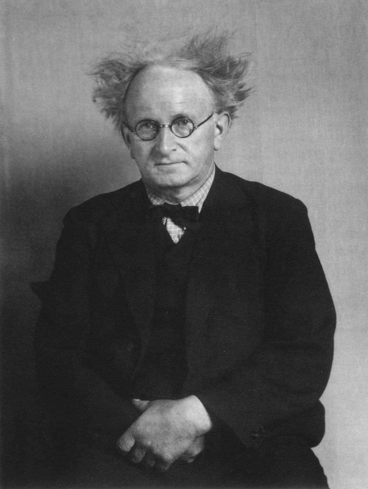
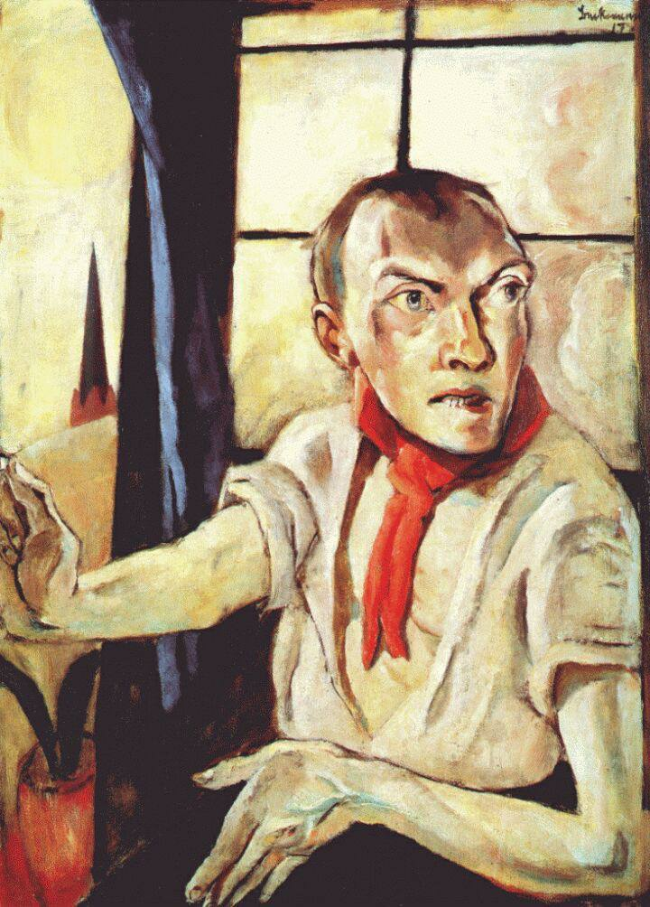
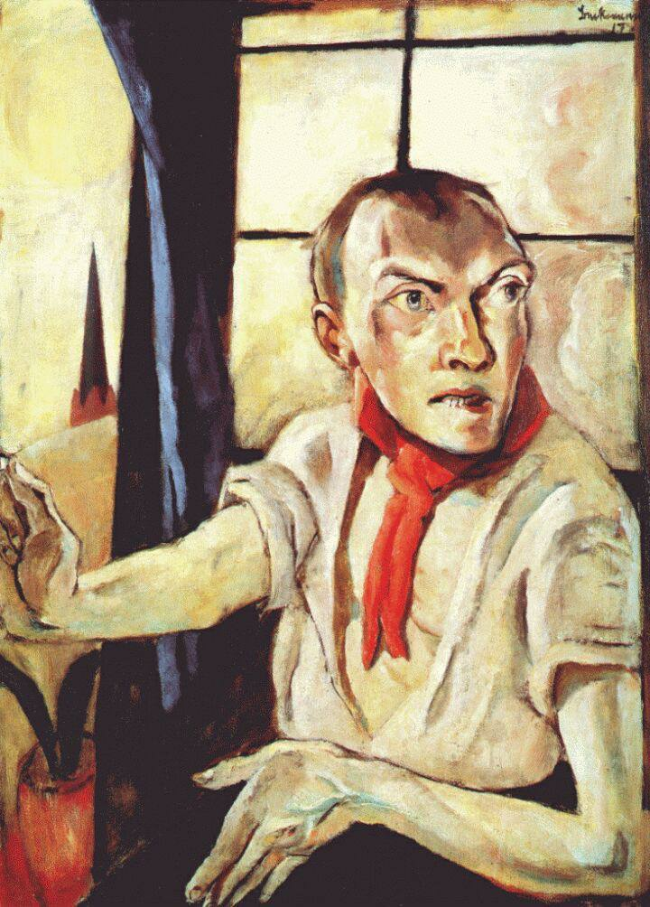

The great war came into the world as an opportunity for many nations to rise
while leading the downfalls of others, one those faced a bitter lose was the Germans, it
was a horrifying shock for them.
From the heart of the loss, the deaths of their beloveds, the sacrifices of their
dreams and the whole ambiguity behind the struggle itself two groups emerged;
the Dadaist who found consolation in dissecting reality into faded love dreams
rejecting to be defined by an form of identity and a group of painters who their
goal was to give the world a bit of the bitter taste of the war, an eagerness to
reveal the real face of their struggle away from the political agenda.
From the heart of the loss, the deaths of their beloveds, the sacrifices of their dreams and the whole ambiguity behind the struggle itself two groups emerged; the Dadaist who found consolation in dissecting reality into faded love dreams rejecting to be defined by an form of identity and a group of painters who their goal was to give the world a bit of the bitter taste of the war, an eagerness to reveal the real face of their struggle away from the political agenda.
Neue Sachlichkeit ( New Objectivity) is the name that was given to this
movement in 1923 by the German critic Gustav Friedrich Hartlaub in an art
exhibition that took place in the Kunsthalle museum, which he directed.
No written rules were to be found but the mutual sensation of horror and
abhorrent that was birthed by their contributions to the military service joined
the brush of every artist in this group to shape their style into a one loud
scream, trying to reflect the harsh reality, their style was characterized by
sharp figures, blunt edges, warm colors dominating the scene, a slight sarcastic
sense of humor that's similar to George Orwell in his books and most
importantly a common feature that all characters had was a nihilistic look that
almost seemed inhumane.
Among the prominent figures of this movement was Max Bechmann. He served in the medical services as a nurse but after few months he was sent back to Germany after suffering a mental breakdown, an event in his life that left him searching for his own true self for as long as he lived through art and this can be clearly detected as he produced more than 80 self-portraits throughout his career, portraying him in various social social statuses—from a Christ-like figure to a Dorian Gray-esque socialist.

The self portrait painting of Max Bechmann as a nurse,1915

The painting of christ and woman taken in Adultery, 1917
On the other hand, his fellow artist and one of the leaders of the movement Otto
Dix had the unpleasant pleasure of being on the battlefield as a machine gunner.
During his service he was wounded several times, he played the game of chess,
the game of life and death and realized the absurdity behind the idealism of
having to win this game. The stories about victory is sold by the same authority
who Dix now realizes is the real enemy. His paintings depicted the war in a very
cynical and melancholic manner, he mocked the
puppeteers, and bravely imposed the questions: what will
happen to the people? What about their uncollected
pieces

A portrait of Otto Dix, 1915

The Skat Player, 1920

Portrait of The War Cripples, 1921
The Neue Sachlichkeit movement was not limited to painting only; it also extended to photography. One of the most prestigious figures of this movement and in the history of photography who is considered “The most important German portrait photographer of the early twentieth century” is August Sander.
August Sander
His portraits were more than mere images; they were narratives. He captured not only the physical appearance of his subjects but also their stories and the essence of their lives. Through the depth of their eyes, the lines on their faces, and the dirt on their fingers, Sander documented the faces that comprised the foundation of the German spirit. His work is an evidence to the movement’s commitment to portraying the plain reality of its time, providing a powerful visual counterpart to the artistic explorations of his contemporaries.


The first photograph, taken in 1931 and titled Secretary at West German Radio
in Cologne , captures a woman who appears confident and assertive. Her
expression and demeanor convey a sense of rebelliousness and enjoyment of
her feminine power, evoking a youthful freedom.
In contrast, the second photograph, taken in 1945 and simply titled Secretary,
portrays a woman whose weary expression reflects the exhaustion of a world
ravaged by war. Her tired eyes suggest that the war, whether ended or nearing
its end, has taken its toll. She must work while men are away at war, embodying
resilience and the loss of youthful vigor.
Both images, captured by August Sander, offer a striking contrast between two
different eras and the impact of historical events on the lives of women.
With the rise of the Nazis and the doom of the Weimar Republic In 1933, things
started to change for the rebellious artists.
This art movement came to an end as the Nazis considered modern art to be an
insult to the German spirit and they labeled the art works that didn't suit their
ideology as Degenerate Art. They held exhibitions only to mock and sabotage
them and they began to treat the artists as a threat.
For incident, the new government called Beckmann a "Cultural Bolshevik” and in
1937 the government confiscated more than 500 of his works from German
museums only to display them in Degenerate Art exhibitions.
He, as an individual artist with a cause, couldn't stand it anymore, he left
Germany one day after Hitler's radio speech about degenerate art in 1937, for
the Netherlands. A self-imposed exile.
The government didn't stop there but forced many of them to leave their
teaching positions in the universities, surrounding them with constant fear of
being watched so the enraged artists eventually followed Max's path in exile,
while others who stayed chose to hide themselves behind a newly formed
artistic approach that wouldn't rise any questions marking the end of an era
that stood firmly against the destruction that war brings and the powerless
industrialized society that was born out of force through the process.
 

Goebbels during his visit to the Degenerate Art exhibitions where you can see Beckmman’s portrait on the wall.